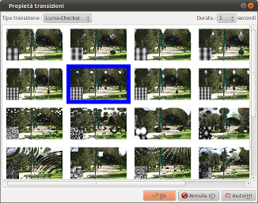

Traducción en
curso
Traducción en
curso
Introduction
The transition properties dialog
allows you to define the entering transition for a slide :

This dialog is called by double-clicking the transition zone of
slides in the timeline of the main window.
Description of the dialog
| Transition type |
Allows you to select a
transition family :
No transition
|
No transition :
The new slide immediately replaces the old one.
Note that this also deactivates:
- Sound fades (The playlist of the new slide
immediately replaces that of the old one)
- Background transitions
|
Basic
|
Dissolve effect :
The slide appears gradually, with gradually
increasing opacity. |
Scripted
transition
|
Zoom : The new
slide appears by getting bigger while the old
slide disappears with a dissolve effect.
Slide : The new slide glides onto the old slide
which disappears with a dissolve effect.
Push : The new slide takes the place of the old
slide by pushing it aside. |
LUMA transition
|
The animation is
based on a luminance mask : the darker the
points in the mask, the faster corresponding
points in the new slide take the place of those
in the old slide. |
|
Duration
|
Allows you to define the
animation duration.
Possible choice are:
- 0,5 secondes (very quick)
- 1 seconde (normal)
- 2 secondes (slow)
- 4 secondes (very slow)
|
See also
ffDiaporama 1.0 - August
2011
 Defining slide
transitions
Defining slide
transitions